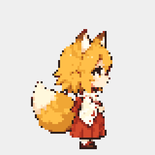

Preview chụp trực tiếp từ renderer native, với snapshot cửa sổ và lựa chọn đứng quan sát được tiêm để kiểm tra ổn định. Không phải quay thao tác chuột tay hoặc bằng chứng quét DWM thật.

Đạt: bốn giai đoạn phản ứng, cả ba frame được Present với đúng episode ID; biểu cảm không dịch vị trí thân. Kịch bản riêng xác minh bế ngắt ngay, kéo lên rồi hủy capture chuyển sang rơi.
Hai kịch bản chuyên biệt · Hồi quy native 29/29 · Báo cáo
R08 còn các ảnh cảm xúc, bế, media và chăm sóc cần Gen bàn giao; chưa nghiệm thu toàn bộ hoặc soak 30 phút.